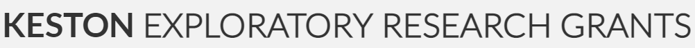
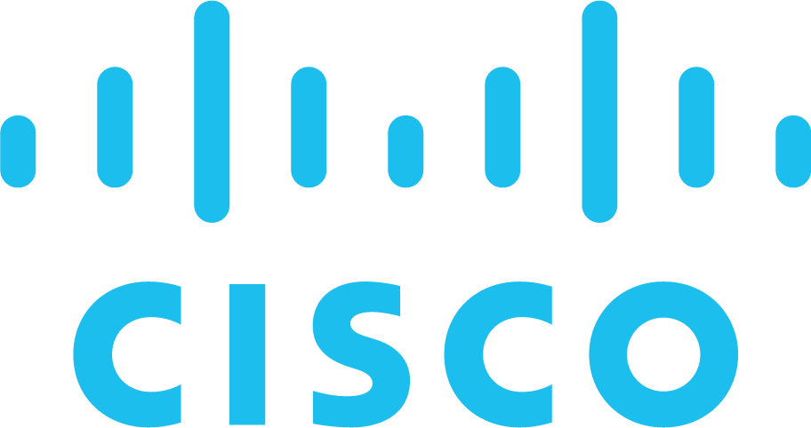

Current Awards and Grants
Keston Exploratory Research Award: Multi-document Newsworthy Event Monitoring and Forecasting

PI of Gift Fund
2023-2024
Cisco Faculty Research Award: Robust Knowledge Extraction from Text

Sole PI of Gift Fund
2022-2023